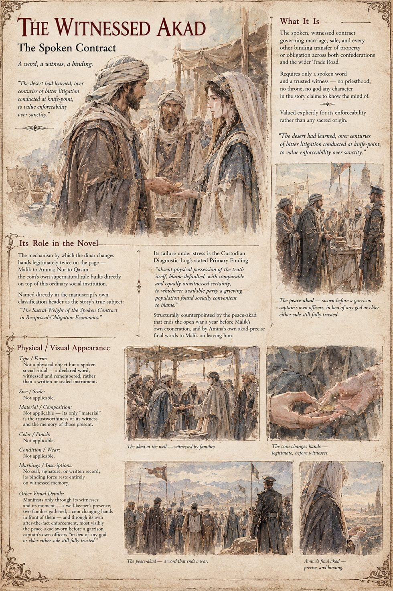

The Witnessed Akad
The Spoken Contract · a social institution, not an object · the vulnerability under test in Case 3001
Not an object, a person or a place, but the spoken, witnessed contract that governs marriage, sale and every other binding transfer of property or obligation across both confederations and the wider trade road. It requires only a spoken word and a trusted witness: no priesthood, no throne, no god any character in the story claims to know the mind of. The tribes of that country keep no priesthood and swear by no single throne of heaven, only by the older and in some ways less forgiving authority of a witnessed word, and the desert has learned, over centuries of bitter litigation conducted at knife-point, to value enforceability over sanctity. A contract sworn before a man everyone trusts to still be alive and lucid in twenty years can still be enforced in twenty years.
It is the mechanism by which the dinar changes hands legitimately on the page: from Malik to Amina, before both families and the keeper of the nearest well, who pronounces the akad complete and binding; and from Nur to Qasim, before the village well-keeper and a passing grain-merchant. The coin's own supernatural rule is built directly on top of this ordinary institution. Amina's last words to Malik are akad-precise, that she requires nothing further from the akad between them and will trouble neither his ledger nor his name again. The peace that ends the open war is an akad too, sworn before a garrison captain's own officers in lieu of any god or elder either side still fully trusted.
Its failure under stress is the Custodian Diagnostic Log's Primary Finding: absent a witnessed akad, ownership defaulted to physical possession, and absent physical possession of the truth itself, blame defaulted, with comparable and equally unwitnessed certainty, to whichever available party a grieving population found socially convenient to blame. The manuscript's classification line names the vulnerability under test as the sacral weight of the spoken contract in reciprocal-obligation economics, and the sheet calls the akad the story's true subject.
The sheet is the one in this case with no figure to describe: its appearance fields read not applicable for size, material, colour and condition, and say that the akad carries no seal, signature or written record, so that its binding force rests entirely on witnessed memory. It shows the institution at work in four scenes, the akad at the well, the coin changing hands before witnesses, the peace-akad before the garrison captain, and Amina's final akad. Its pull-quote is the manuscript's own.
“The desert had learned, over centuries of bitter litigation conducted at knife-point, to value enforceability over sanctity.”